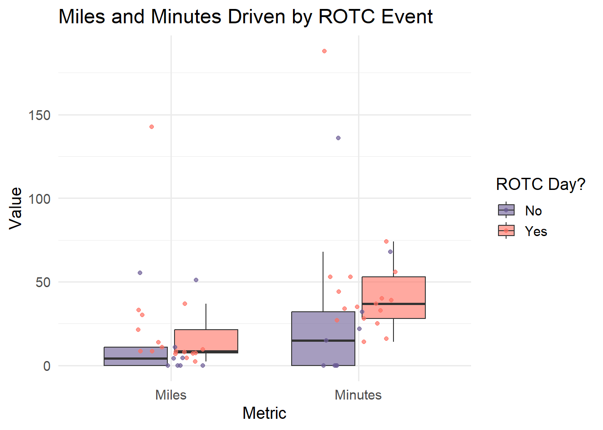

This data could be summarized by comparing counts between certain groups - the counts of miles in a day versus the group of either ROTC or school classes that day, for example, or the amount of minutes driven that day with those same categories. This is taking the mean and comparing it between the groups, and is informative because it will tell us if either of those factors directly influence why that day has more miles or minutes in the car.
b.
my_data <-read_csv("My Data - Sheet1.csv")
Rows: 37 Columns: 8
── Column specification ────────────────────────────────────────────────────────
Delimiter: ","
chr (6): Date, ROTC that day?, Types of roads, Destination, Average speed (M...
dbl (2): Distance driven (miles), Duration of drive (minutes)
ℹ Use `spec()` to retrieve the full column specification for this data.
ℹ Specify the column types or set `show_col_types = FALSE` to quiet this message.
df <-na.omit(my_data) #omitting all the N/A lines I haveView(df)colnames(df) <-c("Date", "Miles", "ROTC", "Minutes", "Road_Type", "Destination", "Speed", "Classes") #changing the columns to simpler namesdf_long <- df |>pivot_longer(cols =c(Miles, Minutes), names_to ="Metric", values_to ="Value") #Converting to this kind of table lets me put minutes and miles side by side to compare both in a single box plotview(df_long)ggplot(df_long, aes(x = Metric, y = Value, fill = ROTC)) +#creating my box plot with time and distance categories on the x, and the value of those two on the left (in minutes and miles)geom_boxplot(alpha =0.6, outlier.shape =NA) +#creating boxplot, hiding the outliarsgeom_jitter(aes(color = ROTC), width =0.2, alpha =0.7) +#creating jitter with ROTC as the outline groupscale_fill_manual(values =c("Yes"="#FF6F61", "No"="#6B5B95")) +#filling in colorsscale_color_manual(values =c("Yes"="#FF6F61", "No"="#6B5B95")) +labs(title ="Miles and Minutes Driven by ROTC Event", #Labeling title, x+y axes, legendx ="Metric",y ="Value",fill ="ROTC Day?",color ="ROTC Day?" ) +theme_minimal(base_size =14)

c.
This boxplot shows the comparison of miles driven and minutes spent driving between days with and ROTC event and days without an ROTC event.
d.
summary_table <- df |>#creating a table from my simplified data. Could do mean based off of the boxplot averages above, but this seems more appropriategroup_by(ROTC) |>#grouping the data through ROTC day or notsummarize(`N`=n(), #Counting the total number of observations#25th, median, and 75th percentile for miles`Miles (Q1)`=round(quantile(Miles, 0.25, na.rm =TRUE), 1), `Miles (Median)`=round(median(Miles, na.rm =TRUE), 1),`Miles (Q3)`=round(quantile(Miles, 0.75, na.rm =TRUE), 1),#25th, median, and 75th percentile for minutes`Minutes (Q1)`=round(quantile(Minutes, 0.25, na.rm =TRUE), 1),`Minutes (Median)`=round(median(Minutes, na.rm =TRUE), 1),`Minutes (Q3)`=round(quantile(Minutes, 0.75, na.rm =TRUE), 1) )flextable(summary_table) #visualizing flex table
ROTC
N
Miles (Q1)
Miles (Median)
Miles (Q3)
Minutes (Q1)
Minutes (Median)
Minutes (Q3)
No
9
0.0
4.2
10.9
0
15
32
Yes
17
7.3
8.4
21.4
28
37
53
Problem 2.
a.
For this data in particular, I might want to convey the feeling of a long commute or time spent on the road through my visualization. I could achieve that through possibly taking the averages of both the miles driven on a day with ROTC and the miles of a day without ROTC and overlaying those two lines on some kind of road map. Using a road map would convey the feeling of driving, and I could color code, highlight, and thicken the exact routes I take on ROTC days vs not ROTC days to represent time (a thicker road) or the distance (the route, obviously). This might get confusing if i’m trying to overlay time and how often a route is used through thickness.
b.
Sketch
c.
Draft
d.
this piece is showing a map of Isla Vista with subsections of the greater Santa Barbara County to illustrate less frequented destinations
I like looking at maps and figured this could be a perfect way to implement my data. I’ve definitely seen similar maps in the past, but not sure what about/where.
The work is a sketch on a piece of paper, it could definitely be more detailed once I acquire more colors. Could also even use a real map as an underlay, but that would take the artistic part out of it.
I created it by simply copying down the Google map and then retracing my common routes and destinations. I cross referenced with the most common destinations - and while I didn’t use an exact formula for how thick each line is based on that number, that could definitely be created to increase the accuracy and credibility of the figure.
Problem 3.
a.
The authors uses a t-test and f-tests. The response variable is the radioactivity levels. The predictor variable is the sampling location category (industrial area, populated area, medical facility, or area near an NPP).
Table 9
b.
The table is pretty clear at representing the data underlying tests assuming you’ve read the subsection before and the whole article for that matter. It clearly includes the average, low p-values, and variance, giving a knowledgeable reader an easy interpretation of the results. But, it could indicate how the low p-value here doesn’t exactly mean that these particular results are important, as it later goes on to say they’re not - which could be misleading.
c.
The table is formatted just like a flextable in R. It handles visual clutter alright, but it definitely could be clearer. It lacks dividing lines, and all the reported values are the same text - not bolded, italicized, divided. It can be kind of confusing to determine which is important or meaningful, as they’ve added a lot of different data with the same visuals into one table.
d.
One recommendation I would make is to somehow divide the p values from the other data points on the table, be it with a line or font or something else, just to make it more easily readable and draw the reader’s eye to the important statistics. Another thing that could be added is some kind of visual along with all the tables, as there are lots of tables in the article but few graphs and no boxplots or other similar graphic. One aesthetic thing I would change is also the way the numbers are formatted. While they make sense, they’d be a lot easier to read if the exponents were actually raised, or perhaps even in a smaller font.